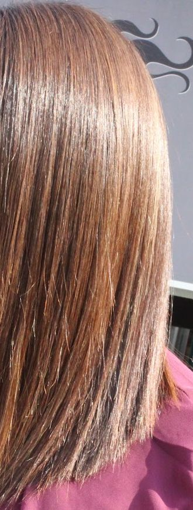
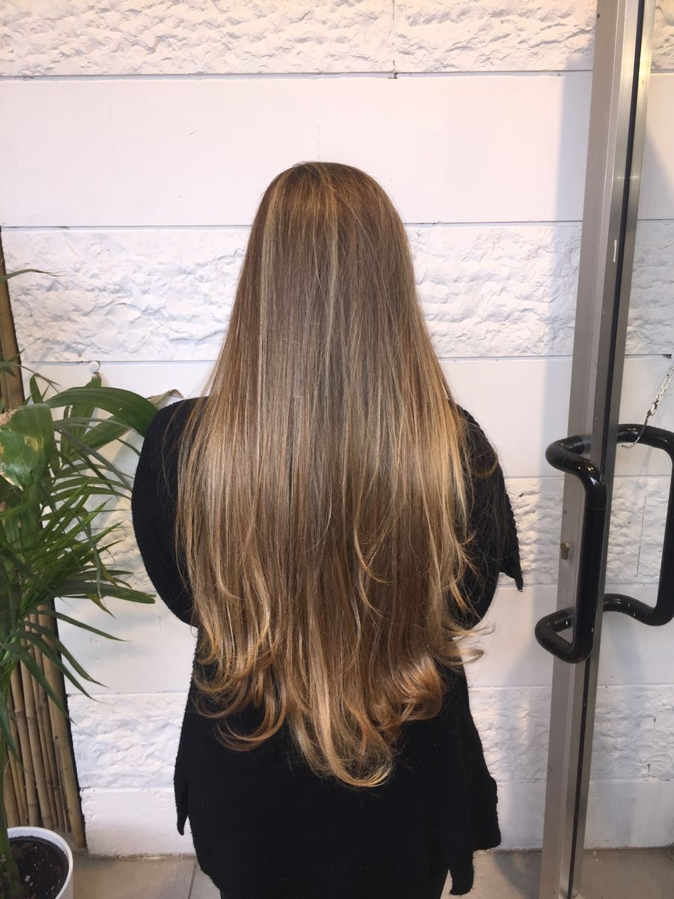
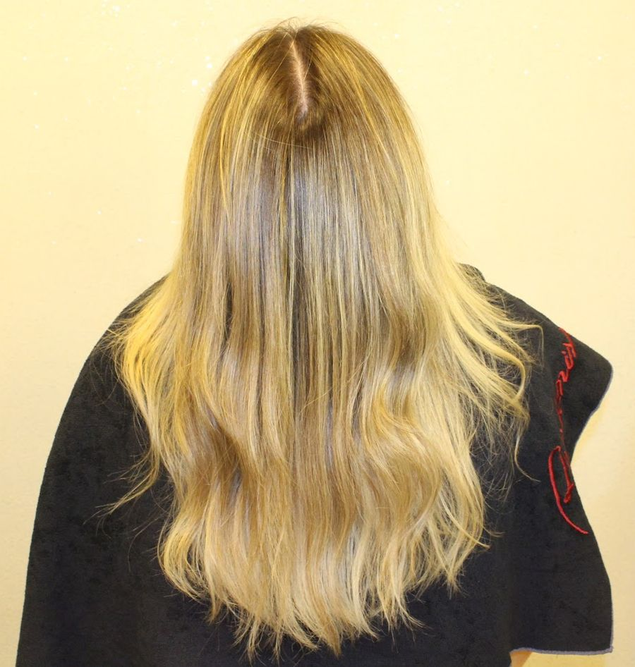
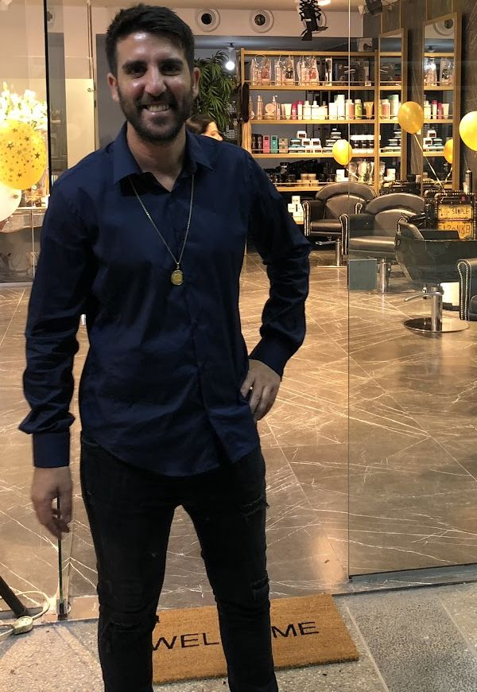
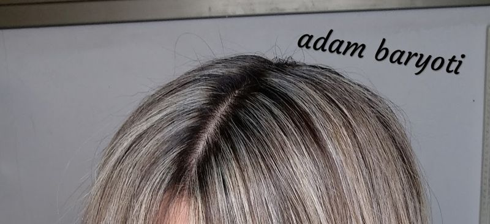
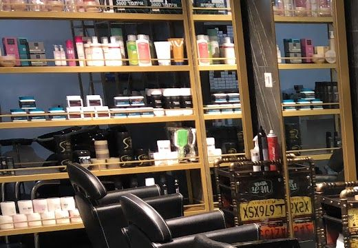
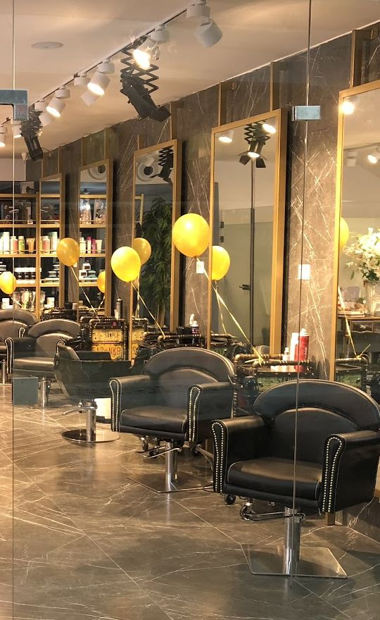

החלקותSmoothing
לשיער גלי, מתולתל או מקורזל.For wavy, curly or frizzy hair.
קונספט לדוגמה שנבנה עבור אדם בריוטי עיצוב שיער המרכז להחלקות · זה אינו האתר הרשמי של העסקA sample concept built for Adam Baryoti Hair Design – The Smoothing Centre · This is not the business’s official website
אדם בריוטי עיצוב שיער – המרכז להחלקות: החלקות, צבע, תספורת ועיצוב, ברחוב האלון בנשר.Adam Baryoti Hair Design – The Smoothing Centre: smoothing, colour, cuts and styling on HaAlon Street, Nesher.
קווצה אחר קווצה, בידיים ובחום, במספרה של אדם בנשר.Section by section, by hand and with heat, at Adam’s salon in Nesher.




אדם עובד בעמדה בעצמו, לצד צוות העובדות של המספרה.Adam works the chair himself, alongside the salon’s team.
״בעל המקום ואנשי המקצוע שעובדים שם אנושיים וחמים״“The owner and the professionals who work there are humane and warm” (translated from Hebrew)
Shlomi Afergan · Google
לשיער גלי, מתולתל או מקורזל.For wavy, curly or frizzy hair.

גוונים, בלונד וצבע שורש.Highlights, blondes and root colour.
תספורת, פן ועיצוב.Cuts, blow-dries and styling.
גם זה כאן, לפי מה שכתבו לקוחות בגוגל.That too, as customers mention on Google.

מדפי מוצרי טיפוח לשיער, בתוך המספרה.Shelves of hair care, inside the salon.
שיש אפור, כורסאות עור ושפע אור.Grey marble, leather chairs, plenty of light.

בוחרים, וההודעה כבר כתובה.Pick, and the message writes itself.
איזה טיפול?Which treatment?
אורך השיערHair length
איזה יום מתאים?Which day suits you?
96 ביקורות. שלוש מהן:96 reviews. Three of them:
״אדם קשוב, נעים ומקצועי. […] אדם דאג לוודא איתי מה אני רוצה ושאל אותי לאורך הדרך אם זה מתאים או שאני רוצה עוד קצת. בהחלט חוויה מתקנת!״“Adam is attentive, pleasant and professional. […] Adam made sure of what I wanted and asked me along the way whether it suited me or whether I wanted a little more. Definitely a corrective experience!”
״מקום נקי ומאוד מסודר עם אנשי מקצוע אמיתיים ומקצוענים! […] מי שמחפש/ת מספרה לכל צורך כולל גבות שפם וכדומה, אין מה לבדוק מקומות אחרים.״“A clean and very tidy place with real professionals! […] Anyone looking for a salon for every need, brows and lip included, need not check other places.”
״העובדות אצלו נהדרות ונדיבות ושירות נהדר״“The women working for him are wonderful and generous, and wonderful service”
ברחוב האלון בנשר. המפה ממש כאן למטה.On HaAlon Street in Nesher. The map is right below.
ראשון עד חמישי 8:30–19:00, שישי 8:00–14:00, שבת סגור.Sunday to Thursday 8:30–19:00, Friday 8:00–14:00, closed on Saturday.
בוואטסאפ או בטלפון 054-552-0879.On WhatsApp or by phone, 054-552-0879.
כן, לקוחות מזכירים את זה בביקורות בגוגל.Yes, customers mention it in their Google reviews.